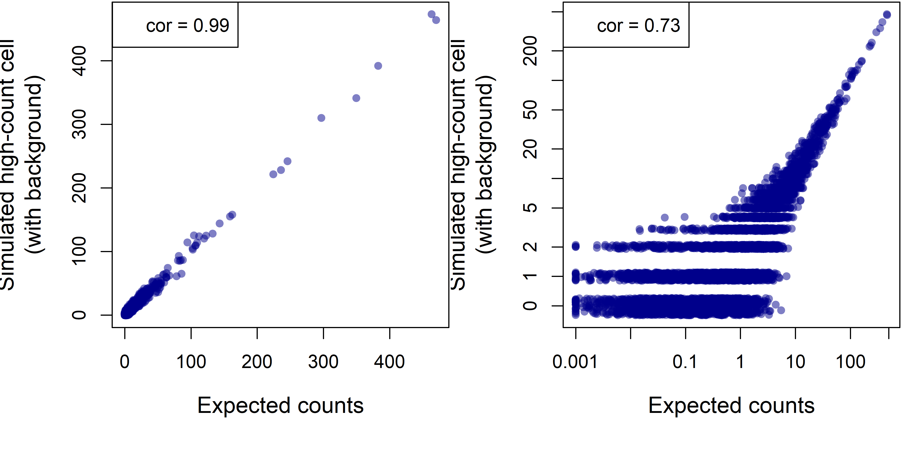

![]()

Introduction
CosMx data includes off-target “background” counts from off-target probe binding, appearing randomly at a low frequency across the dataset. In this article, we’ll discuss how background impacts data analysis. Many details follow, but our main findings are simple:
- For analyses where statistics are calculated across many cells, for example differential expression or spatial correlation analysis, the impact of background approaches zero.
- For analyses of single cell profiles, for example cell typing or UMAP projections, background contributes a small amount of noise/error. But by far the major driver of noise in single cell profiles is sensitivity / readout sparsity, not background.
- Analyses of single genes in single cells, for example calling cells as +/- for a marker gene, perform poorly regardless of background levels, except for perhaps the top ~10% high-expressing genes. We recommend a smoothing / imputation approach to make this kind of analysis reliable.
Note: For details of the origins of background counts, see Appendix 1.
Note: This document focuses on background. But always worth bearing in mind is that segmentation errors have a far more deleterious impact on data quality. See Appendix 2 for a brief discussion.
How much background is there?
In most 6000-plex datasets, background is somewhere between 0.01 and 0.05 counts per plex per cell. To get a fuller sense of the range of background, see below for results from a set of 6k datasets of varying quality.
Figure 1: signal and background across 6k datasets of widely varying data quality. a. Datasets’ mean background (mean counts per negprobe per cell) plotted against mean signal (mean RNA counts per cell). b. Datasets’ proportion of background counts plotted against mean signal. Proportion of background counts is estimated with: (mean counts per negprobe per cell)(plex)/(mean RNA counts per cell).
From Figure 1, we see that datasets with more signal (raw counts) tend to also have more background, but that background does not rise as quickly as signal. For a nuanced discussion of how background behaves within a dataset, see Appendix 3.
Case 1: Impact of background when calculating summary statistics over many cells
CosMx datasets tend to be large, containing hundreds of thousands of cells in total, and at least thousands of cells from most individual cell types. This high sample size gives us high statistical power and precision whenever we calculate summary statistics over cells, for example when performing differential expression or computing spatial correlations. The law of large numbers assures us that as N increases, the noise in our data averages out, leaving us with precise estimates. Thus background, which mainly acts to add random noise to the data, does not obscure trends that occur over large numbers of cells.
To demonstrate what statistical theory assures us, we’ll simulate CosMx data for which we can attribute each count to real RNA or background. Our simulation is simple: using a CosMx dataset, we’ll take a gene for which only a very small percentage of counts are background, i.e. one of our highest expressers. Then we’ll down-sample it until it has half as many counts as the average gene. This down-sampled data will behave like a low-expression gene with near-zero background. Finally, we’ll take background counts from a negative control gene and use them as simulated background atop the down-sampled values, producing data akin to a low-expressing gene with typical background, for which 22.3% of counts are background.
First, let’s get a visceral feel for what background looks like by plotting our simulated counts across space:

Figure 2: spatial plots of simulated real and background counts from a typical gene in a typical 6k dataset. Top row: single cell expression in space. The right three plots are on the same color scale. Bottom row: total expression in a sliding window along the highlighted regions in the spatial plots. The right three plots are on the same vertical scale. Left: COL1A1 is a high expresser in this dataset. Center left: COL1A1 counts were down-sampled 42-fold to create a simulated gene of average expression level and negligible background. Center right: background counts (from a negative control gene). Right: Background added to the down-sampled data to simulate a gene of average expression and average background, for which 22.4% of counts are background.
The spatial pattern of this gene’s expression is equally clear with and without background. This example serves to demonstrate a general principle: since background occurs randomly, it does little to obscure spatial trends in gene expression. We can also demonstrate this without use of simulation. Figure 3 below shows two low expressers displaying clear spatial patterns.

Figure 3: spatial plots of two low expressers.
Now let’s see how background impacts hard statistics. Using the same simulation, we’ll perform a differential expression analysis. Mimicking (somewhat simplisticly) a typical use case, in which we study how a single cell type modules gene expression across spatial context, we’ll measure how gene expression in fibroblasts changes between the top vs. bottom halves of the tissue. To do this, we’ll run a simple t-test on normalized expression. We run this toy analysis on the downsampled / “negligible background” data, and on the data with simulated background added back in. When we analyze all 18871 fibroblasts, we find that adding background leaves our point estimate and confidence interval essentially intact:
| Estimate | Lower 95% conf interval | Upper 95% conf interval | p-value | |
|---|---|---|---|---|
| Downsampled to simulate near-zero background | 0.000107 | 7.35e-05 | 0.000140 | 3.4e-10 |
| With simulated background | 0.000108 | 7.4e-05 | 0.000143 | 6.91e-10 |
Table 1: Differential expression results from 18871 fibroblasts. A linear model comparing expression in the upper vs. lower half of the tissue was run for two expression vectors. Top row: COL1A1 counts were down-sampled 85-fold to create a simulated gene of low expression level and negligible background. Bottom row: Background was added to the down-sampled data to simulate a gene of low expression and average background.
To simulate a rare cell type where our sample size is less overpowering, we can re-run our analysis on a random subset of merely 1000 fibroblasts. When we do so, the fundamental finding remains: adding background to the data barely budges our estimates, confidence intervals and p-values. Remember, this is a gene for which 22.3% of counts are background.
| Estimate | Lower 95% conf interval | Upper 95% conf interval | p-value | |
|---|---|---|---|---|
| Downsampled to simulate near-zero background | 0.000165 | 8.14e-06 | 0.000321 | 0.0392 |
| With simulated background | 0.000175 | 1.64e-05 | 0.000334 | 0.0307 |
Table 2: Differential expression results from 1000 fibroblasts, simulating a rare cell type. For a random subset of 1000 fibroblasts, a linear model comparing expression in the upper vs. lower half of the tissue was run for two expression vectors. Top row: COL1A1 counts were down-sampled 85-fold to create a simulated gene of average expression level and negligible background. Bottom row: Background was added to the down-sampled data to simulate a gene of average expression and average background.
Code for the above simulation can be found here.
Case 2: Impact of background when analyzing single-cell expression profiles
Now, instead of analyzing one gene over many cells, we’ll see what happens when we analyze all the genes in a single cell. For this, we’ll need a new simulation. We first define a “true” expression profile as the average expression of macrophages in a scRNA-seq study (taken from the “ioprofiles” data from the InSituType R package). Then, we use this “true” profile to simulate a single cell’s non-background counts. Specifically, we sample from a multinomial distribution, with N equal to 590 (the average per-cell non-background count level in a typical 6k dataset), and with probabilities proportional to the expression levels of the 6k panel in our “true” profile. Finally, we simulate background atop the single cell profile, using a Poisson distribution with rate = 0.017.
These simulation settings mimic a middle-of-the-road 6k dataset selected from the datasets in Figure 1, with an expected 698 counts per cell, of which 15.5% are background. Simulating a single cell under this setting, we obtained 676 counts, of which 12.9% were background. This represents a typical cell from a typical 6k dataset (Figure 4).
Figure 4: simulated real and background counts for a typical cell in 6k data. Bars show the counts from all genes in the 6k panel. Red vs. blue portions of bars denote background vs. real counts.
For the definitive parts of the profile, i.e. the highly-expressed genes, background does not distort our impression. Rather, it primarily contributes single-count values across a random selection of truly 0-count genes.
Figure 3 gives us a gestalt for what a single cell profile with background looks like. But we truly care about is how well that observed profile reflects the cell’s true expression profile. A perfect assay would of course count every one of the ~300,000 mRNA molecules in a cell. In real-world settings where we measure closer to 1,000 molecules, we can measure a single cell profile’s accuracy by comparing its N observed counts to the expected counts obtained by sampling N mRNA molecules at random from the cell. With that in mind, let’s see how background impacts the fidelity of our measured gene expression profiles to the ground truth. First, we plot our simulated expression profile, with and without background, against the expected counts:
Figure 5. Simulated single-cell profile for a cell with 589 real counts, with and without an additional 87 background counts, in linear (top row) and log-scale (bottom row). (For log-scale plots, zeroes have been rounded up to 0.5.)
The simulated “observed” profiles with and without background have almost the same correlation to the ground truth. In other words, background contributes little to the error.
Notice that even the profile without background is not terribly close to the truth. This divergence can’t be caused by background; rather, it’s caused by sampling error: because the counts are so sparse, they are noisy.
(A brief digression into theory: because we’re sampling such a low percentage of the cell’s RNA molecules, each gene’s counts are effectively Poisson-distributed. The CV (sd / mean) of a Poisson distribution with mean µ is 1/sqrt(µ). In English: Poisson data with low means is noisy.)
To see how sparsity drives error, we can re-run our simulation for a cell with 20,000 RNA counts:

Figure 6. Simulated single-cell profile for a cell with 20,000 real counts and 2971 background counts (12.9% of the total), in linear and log-scale.
The observed profile now correlates closely with the ground truth. We can conclude that sparsity more than background leads our observed counts to diverge from cells’ true profiles. Code for the above simulation can be found here.
Case 3: Impact of background on analyses of single genes in single cells.
In analyses of this sort, e.g. trying to declare a cell as +/- for a marker gene, background does act as a headwind. If we see only 1 count of a gene in a cell, the existence of background means we cannot be confident that the gene is truly expressed in the cell. We can calculate the impact of background in this setting directly, without simulation. (We assume that both real and background counts arise from Poisson distributions with different rates.) Figure 7 below shows how our ability to call gene presence/absence varies based on expression level, background, and the count threshold at which we call presence.

Figure 7. performance metrics for calling cells as +/- for a gene. (top left): sensitivity to call a cell as positive for a gene vs. the gene’s expected expression level per cell. This relationship is shown for thresholds of 1 count (cells with >=1 counts are called positive) and 2 counts. (other panels) The true positive rate for cells called positive for a gene vs. the gene’s expected expression level per cell. Curves are shown for two count thresholds and for typical background (0.02 counts/plex/cell) and 40-fold lower background (0.005 counts/plex/cell). Vertical position indicates the percent of cells that are called positive are truly positive. The three panels correspond to (b) common cell types (50% of cells are positive), (c) somewhat rare cell types (10%) and (d) rare cell types (1%). Code for this simulation is available here.
From Figure 7, we get a broad picture of the performance of calling marker gene positivity. Panel (a) conveys a few important if unsurprising lessons. First, sensitivity rises with expression level; second, it drops when we require more counts to make a cell. Third, sensitivity to detect a gene is quite poor until expected counts rise to ~3 per cell. In high-plex spatial transcriptomics in 2024, genes at this level are uncommon and would be considered high expressers. Put another way: sensitivity to detect gene positivity within a single cell is generally poor, regardless of background level. In panel (b), we see that for common cell types, background causes a low but acceptable rate of false positive calls. For cell types with 10% prevalence (panel c), background results in a 20% false detection rate using a threshold of 1 count, forcing a tradeoff between loss in sensitivity or the admission of some false positive cells to our positive calls. For cell types with 1% prevalence (panel d), a threshold of 1 count produces unacceptable levels of false positives, forcing a threshold of 2 counts and therefore a lower sensitivity.
Note: keep in mind that prevalence can be contextual: a tiny proportion of all cells may be FOXP3+, but looking within T-cells, FOXP3 positivity could reach 10%. Thus by looking for gene positivity within a sensible subset of cells we can improve our detection performance.
There is a powerful countermeasure to this limitation, described here. To summarize briefly, we can derive smoothed/imputed gene expression values for crucial marker genes by borrowing information from similar cells. For a given cell, we identify the 50 cells most closely resembling its expression profile, and we replace the cell’s observed expression profile with the average expression profile of those 50 most similar cells. This negotiates a favorable variance/bias tradeoff: we bias the cell to look like its neighbors in expression space, but we squash noise due to sparsity and background. (In particular, a cell may contain a background count of a marker gene, but it’s vanishingly unlikely that very many of its expression space neighbors will have background in that same gene.) This approach works for any gene that correlates with other aspects of a cell’s expression state. For example, Treg cells aren’t just CD4 T cells with some FOXP3; FOXP3+ and FOXP3- T-cells have more extensive expression differences that allow this smoothing approach to attribute FOXP3 expression to Tregs and not to other CD4 T cells.
In summary, regardless of background level, analyses of single genes in single cells (e.g. of marker genes) have low sensitivity except for high expressing genes. Background increases the false positive rate of marker gene detection, mainly in rare cell types. To overcome inaccuracy resulting from both low expression and background, use imputed marker gene expression.
Appendix 1: Origins of background in spatial transcriptomics
Background counts are simply instances where the instrument calls an RNA transcript that isn’t there. In CosMx data, background happens through two mechanisms.
First, in “FalseCode” style background, reporter probes can colocalize with each other in space by random chance and then be misconstrued as a gene’s barcode. This kind of background is very rare, on the order of 0.005 counts per plex per cell. It can arise from false spot detection, from off-target binding of reporter probes, or from reporter codes from two closely adjacent transcripts combining to form the barcode of a third gene. This kind of background can be measured with our FalseCode negative controls, which are barcodes with no corresponding probes in hybridization reaction.
Second, in “NegProbe” style background, a hybridization probe binds to the wrong target, then is correctly detected through reporter probes. This is the dominant form of background, occurring at 0.01-0.04 counts per plex per cell in most datasets. Our “NegProbe” controls, which are standard hybridization probes targeting sequences not found in any known genome, measure both this kind of background and FalseCode style background. Because they capture both sources of background, our analyses only need consider NegProbes levels.
Appendix 2: contrasting the harm of background vs. of segmentation errors
Background arises at random, and so impacts the data as noise. Segmentation errors, on the other hand, are not random: cells in different spatial contexts will be contaminated by different genes. This causes bias in the data. And while noise averages out at high sample sizes, bias does not. Thus segmentation errors are a far more pernicious influence on data quality than background and sparsity. For further discussion, see here.
Appendix 3: How is background distributed?
As a first-order approximation, negprobe-style background happens with equal probability to all genes. (Beyond the first-order view, we have observed small subsets of negprobes with elevated background, usually not dramatically above the other negprobes.) We usually see cells’ background rising in proportion to their total expression: a tumor cell with twice the counts of another tumor cell is probably experiencing twice the background. Areas of necrosis will generate higher background, likely due to a more charged and thus more sticky surface for nucleic acid probes. Negprobes also seem to appear more densely outside of cells.
Appendix 4: Measuring cells’ background
Because background is so low, averaging around 0.01-0.04 counts per cell in the 6000plex panel across all the 20 NegProbes, a single cell’s negprobe signal is too unstable to give a precise estimate of its background rate. (Most cells have 0 NegProbe counts, while their true background rate is surely greater than zero.) When we need to estimate single cells’ background levels, we estimate this from their total counts: we calculate the mean background counts per total counts across the dataset, then apply this ratio to each individual cell’s total counts.